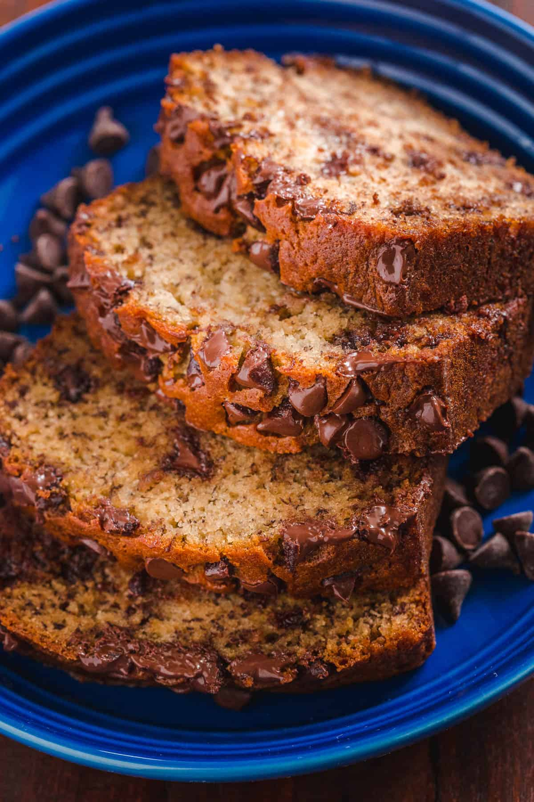

Chocolate Chip Banana Cake

Description
This banana cake packed with chocolate chips is a delightful way to enjoy a classic flavor combination. Easy and delicious dessert to make. One of my favortie comfort food.
Ingredients
- 1 cup all purpose flour
- 3/4 cup brown sugar
- 3 large overripe bananas
- 2 tbsp. cocoa
- 1 tsp. salt
- 1 tsp. baking soda
- 1 tsp. vanilla
- 1 tsp. instant coffee (optional; only to enhance chocolate flavor)
- 1 large egg
- 1/4 cup melted butter
- 1/4 cup cooking oil
- semi sweet chocolate chips
- chopped walnuts (optional)
Steps
- Preheat oven to 350 F, and greasegl a 9x13 baking pan.
- In a bowl, mash the bananas, then combine the egg, melted butter, oil, and instant coffee.
- Add the dry ingredients one by one, making sure to mix it first before adding another ingredient. Becareful not to over mix
- Once fully combined, mix in the chocolate chips and chopped walnuts.
- Bake for 35 minutes. Let it cool for a few minutes then slice and serve.